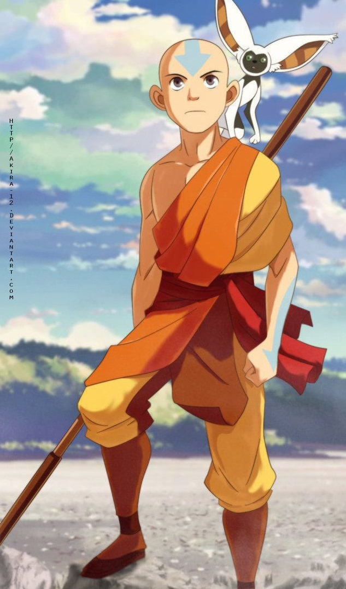
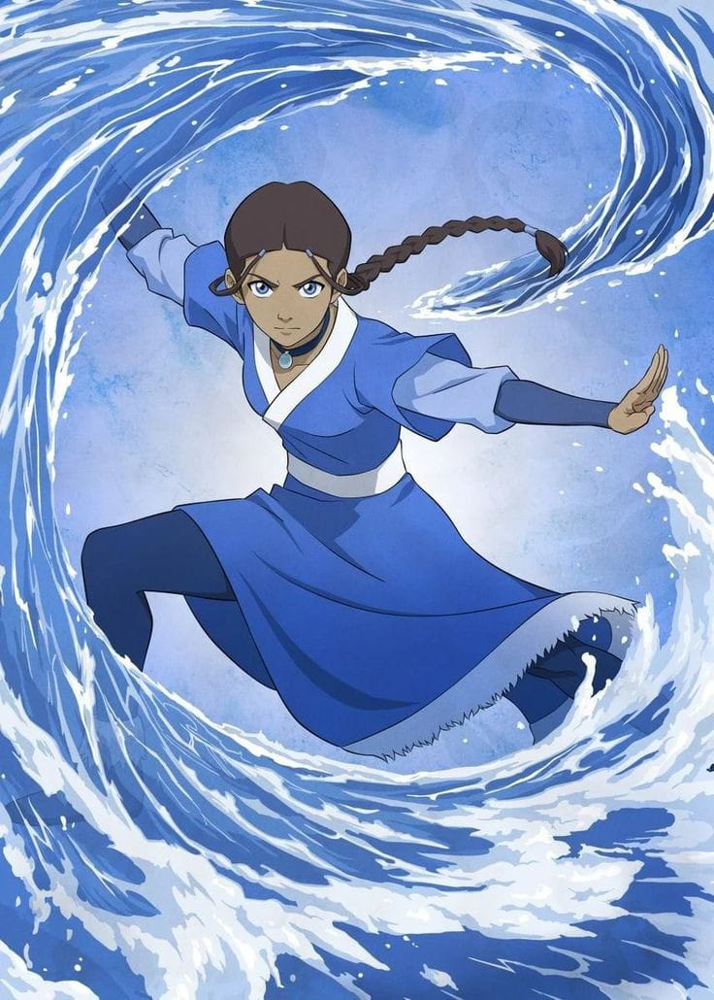
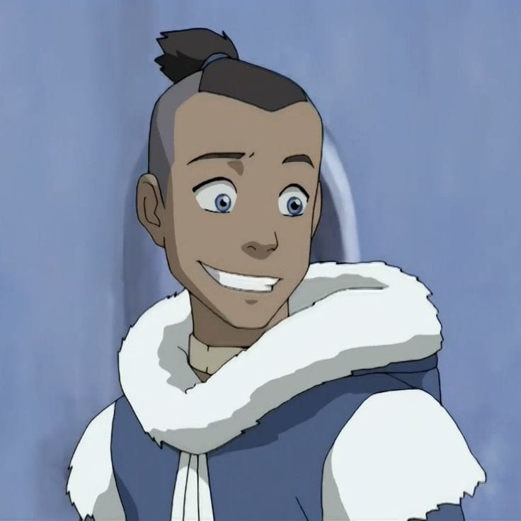
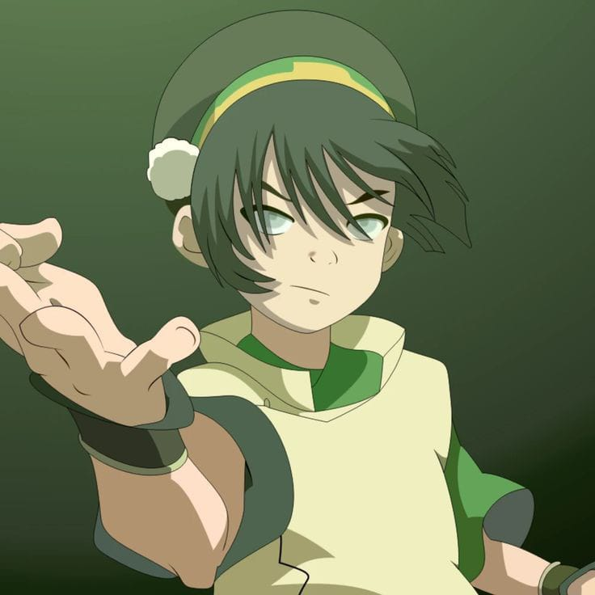
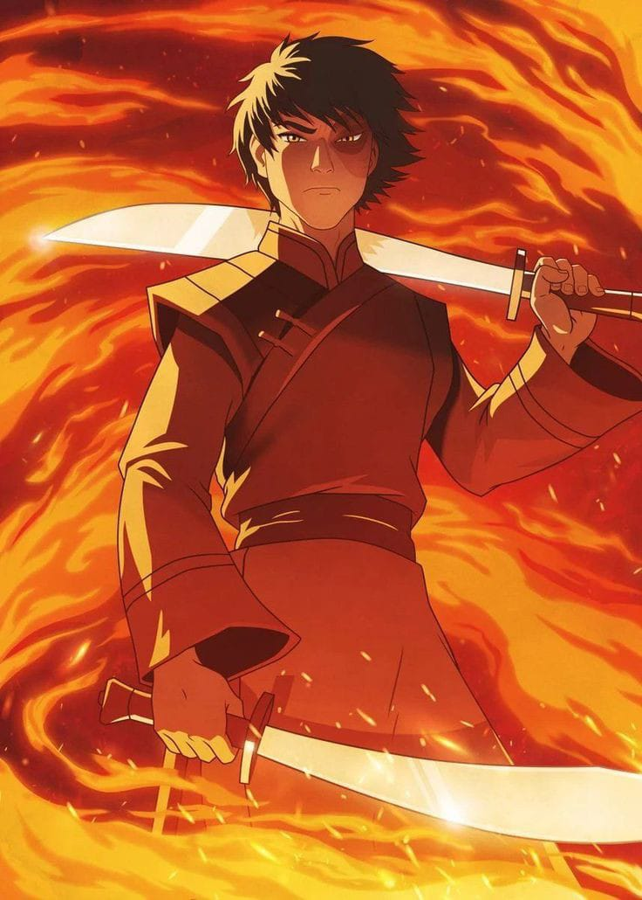
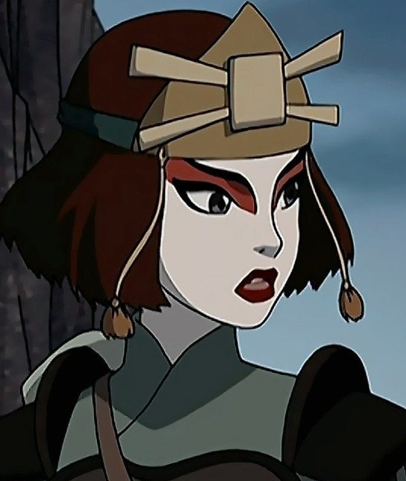

Aang
Aang é o protagonista da série "Avatar: The Last Airbender". Ele é o último Avatar, dominador das
quatro nações, destinado a trazer equilíbrio ao mundo. Aang foi encontrado congelado em um iceberg
por Katara e Sokka. Ao longo da jornada, ele aprende a dominar os quatro elementos, enfrenta
desafios e amadurece emocionalmente. Aang lida com a responsabilidade de ser o Avatar, encontrando
uma maneira pacífica de acabar com a guerra. Sua busca por equilíbrio interno e externo é
fundamental para seu crescimento como líder e guardião do mundo.

Katara
Katara é uma habilidosa dobradora de água e irmã mais velha de Sokka. Após descobrir o Avatar
congelado no iceberg, ela embarca em uma jornada ao lado de Aang e se torna sua fiel amiga e
mentora. Katara é uma lutadora corajosa e determinada, buscando justiça para seu povo e vingança
contra os responsáveis pela morte de sua mãe. Ela desempenha um papel fundamental ao treinar e
apoiar Aang em sua jornada para dominar os elementos e trazer paz ao mundo. Ao longo da série,
Katara desenvolve suas habilidades de dobradora de água e mostra-se uma líder respeitada e
carismática.

Sokka
Sokka é o irmão mais velho de Katara e um habilidoso estrategista. Ele é o único membro não-dobrador
em sua equipe, mas compensa sua falta de habilidades com inteligência e coragem. Sokka é o protetor
de seu grupo, buscando sempre o melhor para seus amigos e o mundo. Ele evolui ao longo da jornada,
superando suas inseguranças e provando ser uma parte indispensável da equipe Avatar. Sua sagacidade
e senso de humor são características marcantes, tornando-o uma figura carismática na série.

Toph Beifong
Toph Beifong é uma talentosa dobradora de terra cega desde o nascimento, filha de uma família nobre
que a superprotegia. Ela foge de casa para se tornar uma lutadora independente e acaba se juntando à
equipe Avatar. Toph é uma mestra na dobra de terra e cria um novo estilo de dobra, o Metalbending.
Sua personalidade forte e destemida a torna uma figura marcante na série. Toph desafia estereótipos
e preconceitos, mostrando sua incrível força e habilidade apesar da cegueira. Sua amizade com Aang e
os outros membros da equipe a ajuda a crescer emocionalmente, tornando-a uma parte essencial da
jornada para trazer equilíbrio ao mundo.

Zuko
Zuko é um príncipe exilado da Nação do Fogo em busca de honra e redenção. Ele foi banido por seu
pai, o Lorde do Fogo Ozai, após questionar sua crueldade. Determinado a capturar o Avatar para
restaurar sua honra, Zuko persegue Aang incansavelmente. Ao longo da jornada, ele enfrenta conflitos
internos e descobre que sua busca pela honra estava equivocada. Eventualmente, Zuko se junta à
equipe Avatar, tornando-se um aliado valioso. Ele busca a redenção e o equilíbrio, superando seus
demônios internos e se tornando um líder compassivo e justo. Sua transformação o torna uma figura
fundamental na restauração da paz e harmonia no mundo.

Suki
Suki é uma habilidosa guerreira da Tribo Kyoshi, conhecida por sua destreza em combate. Ela lidera
as Kyoshi Warriors, um grupo de guerreiras treinadas em artes marciais. Suki conhece Aang e seus
amigos durante suas aventuras e se torna uma aliada leal. Ela desempenha um papel vital em momentos
críticos da série, como ajudar Aang a se infiltrar no navio de guerra da Nação do Fogo. Suki é uma
figura forte e corajosa, inspirando muitas pessoas ao redor dela. Sua determinação e habilidades a
tornam uma personagem memorável e respeitada na jornada para derrotar a Nação do Fogo e trazer paz
ao mundo.
Ir para o topo